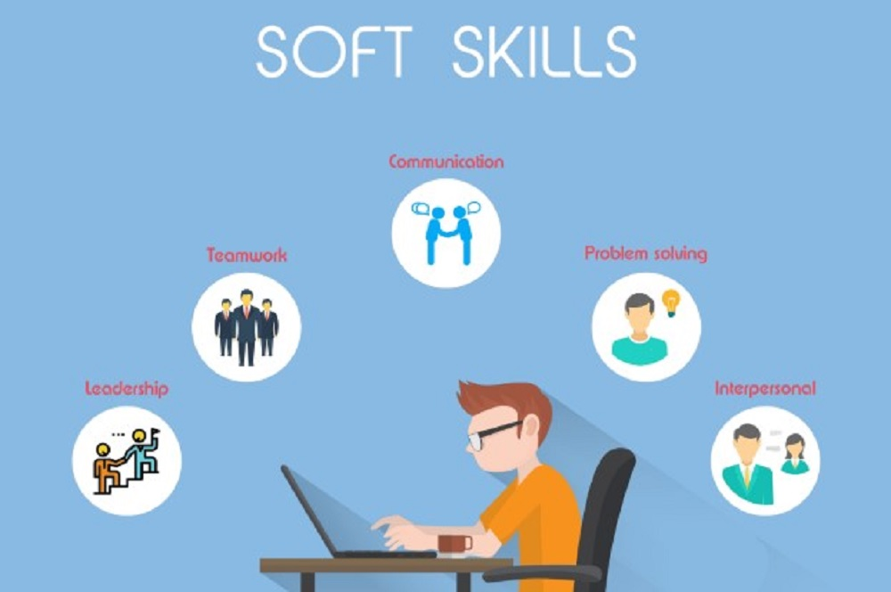

"From Books to Passion: My Educational Journey"
About
Welcome to my webpage!
I'm Subharani Mudigiri, originally from the picturesque village of Kakulapadu. I completed my Bachelor's in Computer Science and Engineering and am passionate to learning.
Education
Bachelor's Degree
Intermediate
Secondary school
Skills
Technical skills
- Basic of HTML
- Basic of CSS
- Basic of JAVASCRIPT
- C programming
- MS Office
Soft skills
Hobby


Conclusion